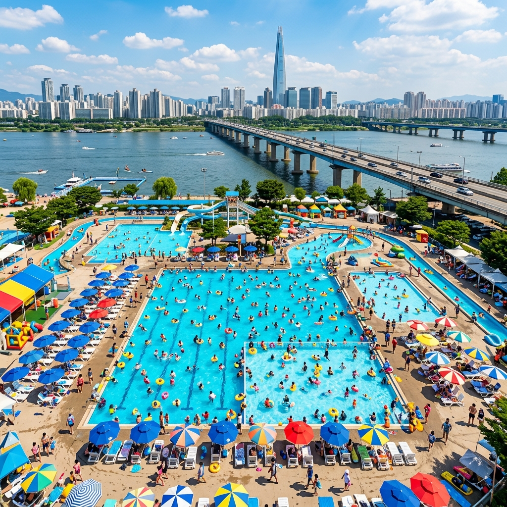
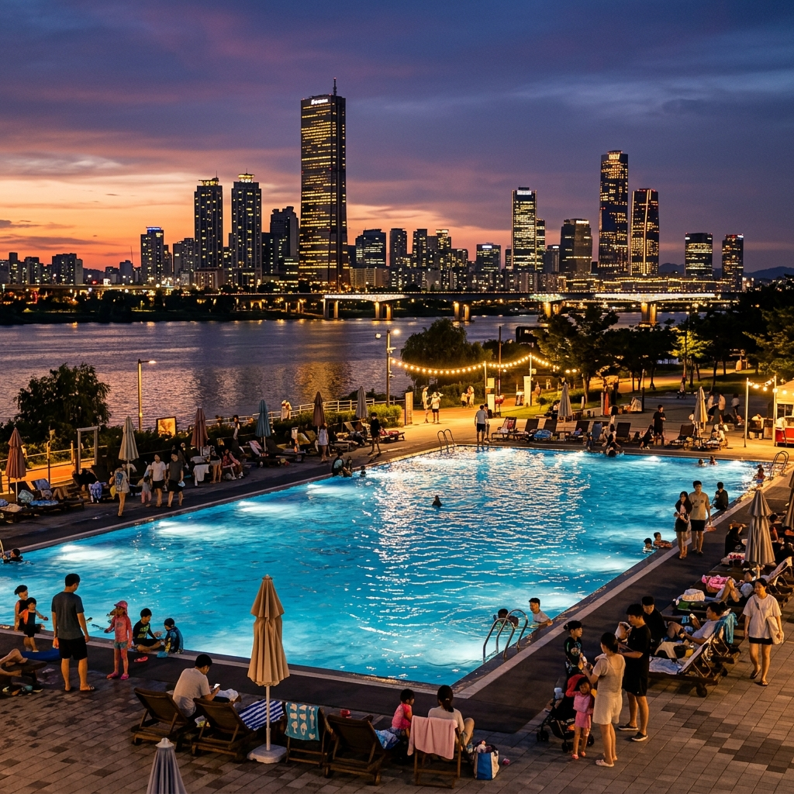
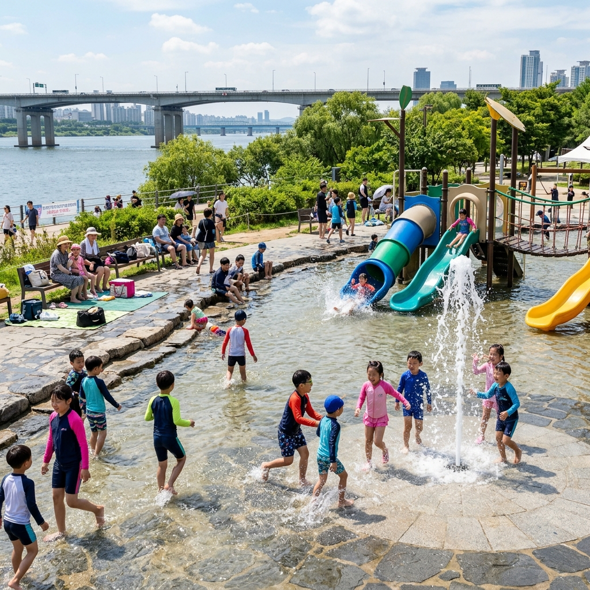

2026년 한강 수영장의 가장 큰 변화는 잠원 수영장 운영 중단입니다. 오랜 기간 한강 수영 명소로 사랑받던 잠원 한강공원 수영장이 노후화에 따른 리모델링 공사로 올해 이용할 수 없게 됐습니다. 재개장은 2028년 이후로 예정되어 있습니다.
대신 기존 뚝섬·여의도 수영장과 잠실·양화·난지 물놀이장이 정상 운영됩니다. 잠원을 즐겨 찾던 분들은 여의도나 뚝섬으로 대체 이동이 필요합니다.
야간 운영이 7월 3일부터 시작된다는 점도 주목할 만합니다. 한낮 무더위를 피해 저녁 이후 한강 수영을 즐길 수 있는 기회가 생겼습니다.
운영 기간은 6월 19일부터 8월 30일까지이며, 매일 오전 9시~오후 6시가 기본 운영 시간입니다.
한강공원의 물놀이 시설은 성인 레인 수영이 가능한 수영장과 얕은 수심의 어린이 특화 물놀이장으로 구분됩니다.
수영장(뚝섬·여의도)은 레인이 구획돼 있어 본격적인 수영 연습이나 물놀이가 모두 가능합니다. 입장 요금이 성인 5,000원으로 물놀이장보다 높습니다.
물놀이장(잠실·양화·난지)은 바닥 분수, 미끄럼틀, 얕은 수심의 놀이 시설이 중심입니다. 성인 3,000원이며 어린이(6세 이하)는 무료입니다. 어린 자녀를 동반한 가족이라면 물놀이장 쪽이 더 편리합니다.

뚝섬 수영장은 2호선 뚝섬유원지역에서 도보 5~10분으로 한강 수영장 중 대중교통 접근이 가장 편리한 곳 중 하나입니다.
레인 수영과 자유 수영 구역이 분리 운영되어 목적에 따라 공간을 선택할 수 있습니다. 본격적인 수영 연습을 원한다면 레인 구역을, 자녀와 함께 물놀이 중심으로 즐기려면 자유 구역을 이용하세요.
7월 3일부터 야간 운영이 추가됩니다. 조명 아래 한강 야경을 배경으로 즐기는 저녁 수영은 낮과는 다른 묘한 분위기가 있습니다.
뚝섬 지구는 자전거 코스, 잔디밭, 카페 공간이 잘 조성돼 있어 수영 전후 한강 나들이를 연계하기에 좋습니다.
여의도 수영장은 지하철 5·9호선 여의도역 또는 9호선 샛강역에서 접근이 가능합니다. 여의도 한강공원 내 위치로 국회의사당과 인접한 입지입니다.
야간 운영(7.3~)이 시작되면 여의도 수영장에서도 저녁 시간 이용이 가능합니다. 한강 양 방향을 조망하며 저녁 수영을 즐길 수 있어 특별한 경험이 됩니다.
주차장이 있지만 여름 성수기 주말에는 오전에 조기 만차됩니다. 지하철 이용을 우선 고려하세요.
수영 후 여의도 분수 광장이나 인근 IFC몰, 한강공원 자전거 코스와 연계하면 하루 일정이 알차게 채워집니다.
잠실 자연형 물놀이장은 2·8호선 잠실역에서 접근 가능하며, 롯데월드타워·잠실 올림픽공원과 가까운 입지입니다.
수심이 얕고 바닥 분수, 물 미끄럼틀 등 어린이 특화 시설로 구성돼 있어 영유아와 초등학생을 데려온 가족에게 가장 인기 있는 선택지입니다.
성인 입장료 3,000원, 어린이 1,000원으로 수영장보다 저렴합니다. 6세 이하 무료라는 점이 유아 동반 가족에게 큰 장점입니다.
물놀이 후 잠실 롯데월드 아쿠아리움이나 석촌호수 산책로를 이어 방문하면 하루 코스로 손색이 없습니다.

뚝섬과 여의도에 비해 상대적으로 한산한 편인 양화·난지 물놀이장은 붐비는 것이 싫은 분께 좋은 대안입니다.
양화 물놀이장은 2호선 합정역·당산역 인근으로 홍대·합정 상권과 연계하기 좋습니다. 난지 물놀이장은 상암 월드컵공원 옆에 위치해 여유로운 잔디밭 환경과 함께 물놀이를 즐길 수 있습니다.
두 시설 모두 물놀이장 형태로 수심이 낮고 가족 친화적입니다. 주말 피크 시간에도 뚝섬·잠실보다 혼잡도가 낮은 편입니다.
7월 3일(금)부터 뚝섬·여의도 등 일부 수영장에서 야간 운영이 추가됩니다.
야간 운영 시간과 마감 시각 등 세부 사항은 서울시 한강사업본부 홈페이지(hangang.seoul.go.kr)에서 확인하세요.
야간 시간대는 한낮보다 이용 인원이 적어 훨씬 쾌적하게 즐길 수 있습니다. 여름 열대야가 심한 날일수록 오히려 저녁 수영이 더 상쾌한 선택이 될 수 있습니다.
시설 유형별 입장 요금입니다.
| 시설 | 성인 | 청소년 | 어린이 |
|---|---|---|---|
| 뚝섬·여의도 수영장 | 5,000원 | 4,000원 | 3,000원 |
| 잠실·양화·난지 물놀이장 | 3,000원 | 2,000원 | 1,000원 |
6세 이하는 모든 시설 무료입니다. 요금은 2026년 기준이며 방문 전 최신 정보 확인을 권장합니다.
수영모는 필수 착용 사항입니다. 한강 수영장은 수영모 없이 입장이 불가합니다. 미리 챙겨오세요.
그 외 기본 준비물로 수영복, 수건, 선크림(SPF50 이상), 미네랄워터, 간식, 여분 속옷·옷이 있습니다.
음식 반입 가능 여부는 시설마다 다를 수 있으니 사전 확인이 필요합니다. 귀중품은 물 안에 가지고 들어가지 않도록 보관함을 활용하세요.

가장 붐비는 시기는 7월 마지막 주부터 8월 첫 주까지입니다. 이 기간을 피하면 훨씬 쾌적하게 이용할 수 있습니다.
방문 시간대는 오전 9시~11시 또는 오후 4~6시가 비교적 여유롭습니다. 오후 12시~3시는 한낮 더위와 인원 집중이 겹쳐 가장 혼잡한 시간입니다.
평일 방문이 가장 좋은 방법입니다. 같은 시설도 주말 대비 이용 인원이 절반 이하인 날이 많습니다.
개장 첫 주말(6월 20~21일)도 개장 효과로 붐빌 가능성이 높습니다. 여유롭게 즐기려면 6월 말~7월 초 평일을 권장합니다.